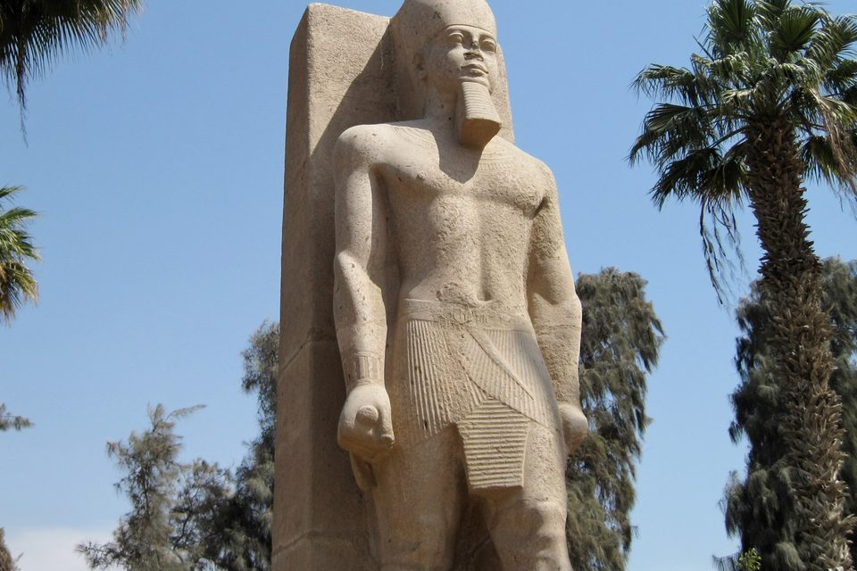

Egypt · Memphis
Memphis (Mit Rahina) Open-Air Museum audio guide
5 stops · 8 min
Billed in ZAR
Unlocks in this browser after payment.
The first capital, under a village. Listen here, or get the Earwise app to play as you walk.
Stops
- 1
The entrance and the lost capital
At the entrance of the open-air museum, beside the road through Mit Rahina village. This is stop 1 on the route.
Play0:00 / –:––Read along
The village around you is called Mit Rahina. Its palm groves, canal and low houses stand on top of a lost royal city. This was Memphis.
Egyptian tradition says Memphis was founded by Menes, when he united Upper and Lower Egypt. UNESCO gives the traditional date as about 3000 BC. Many historians see Menes as more legend than man. Yet they accept that Memphis was the first capital of a single, united Egypt. It kept that role through the Old Kingdom, when the great pyramids were built.
The site was well chosen. Memphis commanded the entrance to the Nile Delta, where important trade routes met. UNESCO writes that no ruler with serious ambitions had any real alternative.
The city's earliest name was Inebu-hedj, which means the white walls. Later it was called Men-nefer, established and beautiful. The temple of its god, Ptah, was called Hut-ka-Ptah, the temple of the spirit of Ptah. Greek speakers heard that name as Aigyptos. From it comes the word Egypt. So the name of the whole country may begin in this field.
Memphis stayed important for thousands of years. In 196 BC, the decree carved on the Rosetta Stone was issued from the temple of Ptah. Later it was Egypt's second city. That lasted until AD 641, when Fustat was founded, the town that grew into Cairo. From then on, Memphis was slowly turned into a quarry. Its stone went into new buildings, and its temples were taken apart.
In 1979, UNESCO listed Memphis and the pyramid fields that run from Giza to Dahshur as a World Heritage Site. The part you can visit here is a small open-air museum, set up around some of the best finds.
- 2
The fallen colossus of Ramesses II
Inside the colossus hall, the covered building near the entrance. Take the stairs to the balcony for a view of the face. This is stop 2 on the route.
Script and audio included when you buy - 3
The alabaster sphinx
In the garden beside the sphinx, which sits on a low platform near the colossus hall. This is stop 3 on the route.
Script and audio included when you buy - 4
The temple of Ptah and the small shrines
In the open garden among the carved blocks, columns and statue fragments between the colossus hall and the sphinx. This is stop 4 on the route.
Script and audio included when you buy - 5
The Apis embalming tables
At the Apis embalming remains. Follow the site signs; some guides place the tables in the garden, and others place the embalming house across the road. This is stop 5 on the route.
Script and audio included when you buy
On the map
All 5 stop pins for this guide are marked. Open map